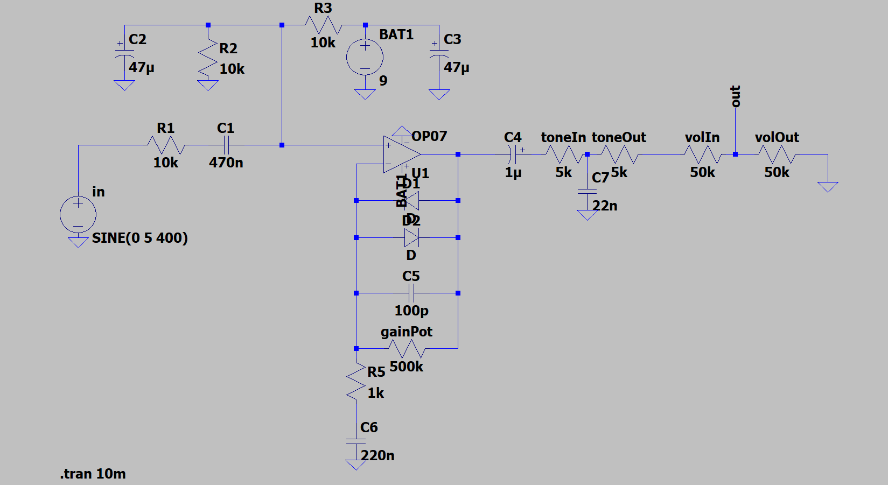
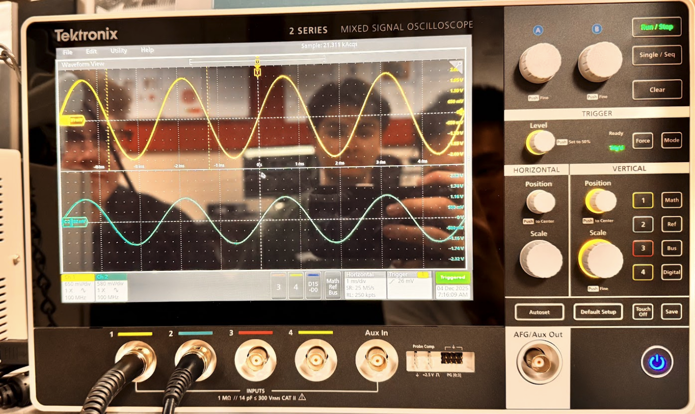
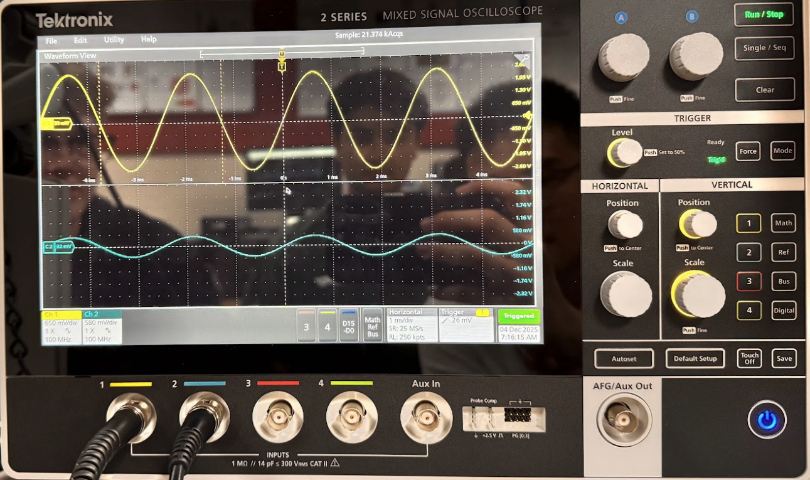
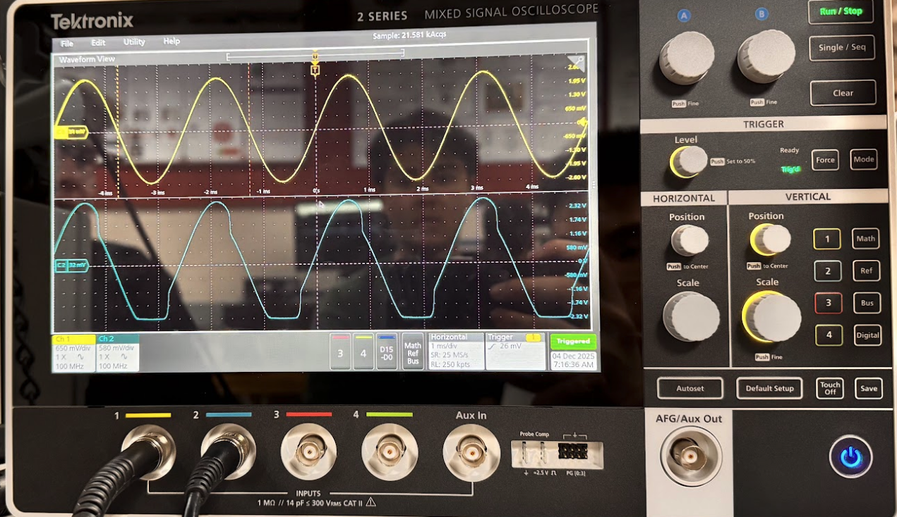
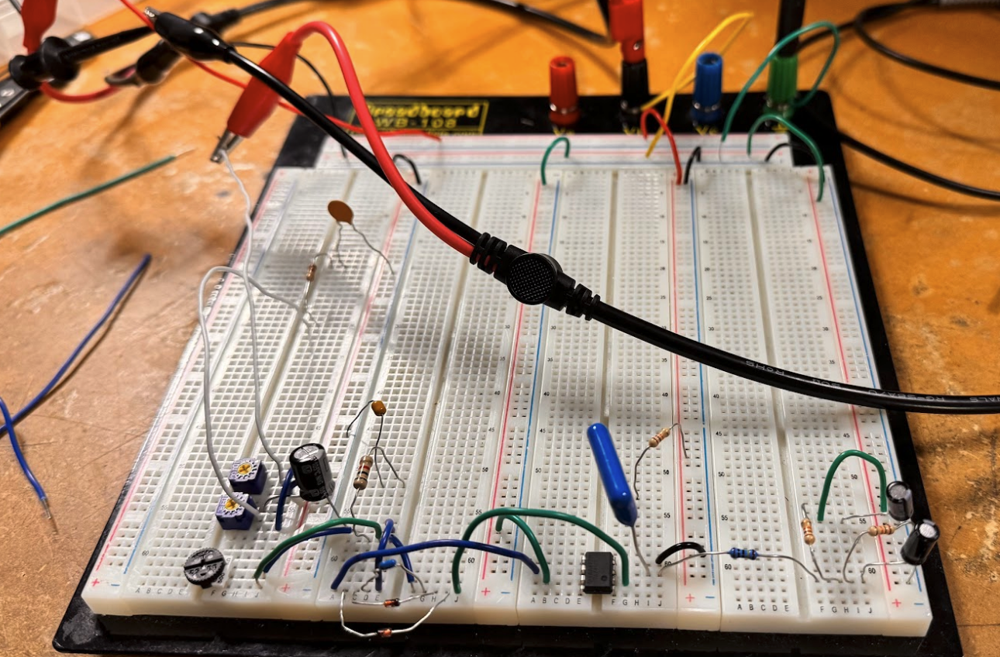

Overdrive Guitar Pedal





Project Overview
I designed and built a custom overdrive guitar pedal using an op-amp based analog circuit powered by a 9V supply. The circuit was designed and simulated in LTSpice, where I modeled the gain stage, diode based clipping behavior, and frequency filtering to understand how component values affect signal distortion and tone. After simulation, I implemented the design using discrete components including resistors, capacitors, diodes, and potentiometers for gain, tone, and volume control then prototyped the circuit on a breadboard and validated its performance using oscilloscope measurements to analyze waveform shaping, clipping, and frequency response.
Key Features
- Op-Amp Based Signal Amplification
- Diode-Based Clipping Circuit
- Adjustable Gain, Tone, and Volume Controls
- LTSpice Circuit Simulation
What I Learned
I learned how to design an analog circuit from scratch and verify it using LTSpice before building it physically. I gained hands-on experience working with op-amps, signal biasing, diode clipping, and frequency filtering, and saw how component values directly affect sound and signal shape. I also improved my breadboarding and debugging skills and became more comfortable using an oscilloscope to test and troubleshoot real circuits.